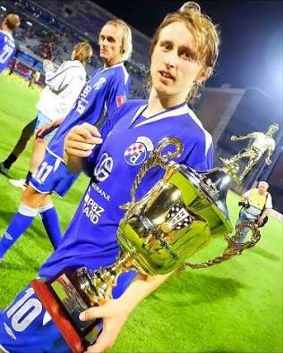
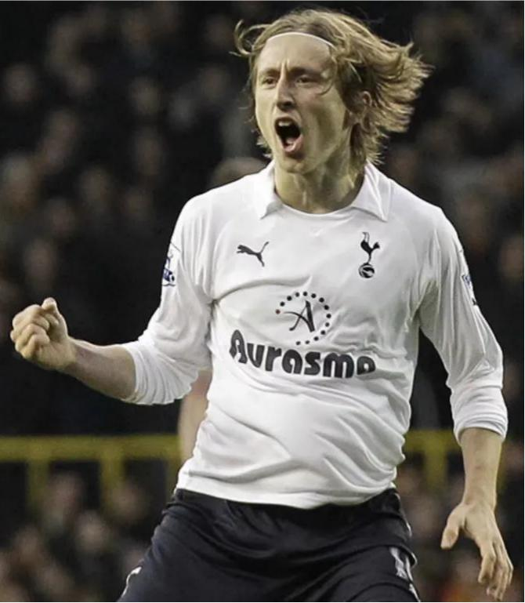
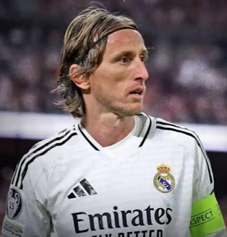
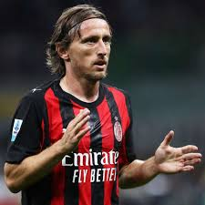

Luka Modrić began his professional senior club career in 2003 with Dinamo Zagreb, alongside loan spells at Zrinjski Mostar and Inter Zaprešić. He won six domestic trophies with Dinamo Zagreb, establishing himself as a marquee playmaker.In the 2005–06 season, Modrić signed a ten-year contract with Dinamo Zagreb. He secured a place in Dinamo's first team, contributing 7 goals in 31 matches to help win the league. He finished his four-year tenure at Dinamo with a tally of over 31 goals and 29 assists in four league seasons,contributing most notably in the 2007–08 season when Dinamo won the second Croatian Cup and became champions by a 28-point margin.

Modrić agreed to transfer terms with Tottenham Hotspur on 26 April 2008. He was the first of many summer signings for manager Juande Ramos, and was also the Premier League's first summer transfer. Modrić played 32 Premier League matches in the 2010–11 season, scoring three goals, recording two assists and making the highest average number of passes per match for Spurs with 62.5 and an accuracy rate of 87.4%. At the end of the season, Modrić was voted the Tottenham Hotspur Player of the Year. In this year Modrić helped Tottenham reach their first involvement in the UEFA Champions League.

Between 2012 and 2025, Luka Modrić transformed from a heavily scrutinized into the most decorated player in Real Madrid's 123-year history, securing a club-record 28 trophies across 597 appearances. A game-changing long-range goal against Manchester United in March 2013 launched his rise into Madrid's engine room. Anchoring the midfield alongside Toni Kroos and Casemiro under managers Carlo Ancelotti and Zinedine Zidane, providing the iconic corner assist for Sergio Ramos in the 2014 Champions League Final to seal La Décima, keying an unprecedented European three-peat (2016–2018), and adding further Champions League titles in 2022 and 2024. On the international stage, he captained Croatia runs to the 2018 FIFA World Cup final and 2022 third-place finish—winning the World Cup Golden Ball in 2018 and sweeping the Ballon d'Or, FIFA The Best, and UEFA Player of the Year awards. Even as he transitioned into a veteran leader and club captain in his final seasons, his press-resistant dribbling and signature trivela passes remained vital, crowning a legendary 13-year stint highlighted by 6 UEFA Champions League titles, 4 La Liga titles, 2 Copa del Rey titles, 5 Spanish Super Cups, 5 UEFA Super Cups, and 6 Intercontinental Cups before concluding his storied Madrid career in 2025.

On 14 July 2025, Modrić joined Serie A side AC Milan on a free transfer, signing a one-year contract with an optional one-year extension.Over the course of the season, he quickly established himself as an important part of Milan's midfield, but in the final months he began to encounter physical difficulties.On 23 July 2026, Modrić signed a one-year extension with the club until 30 June 2027, confirming his second season for the Rossoneri.